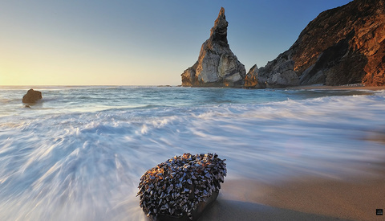
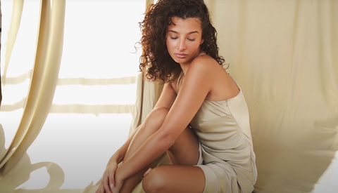
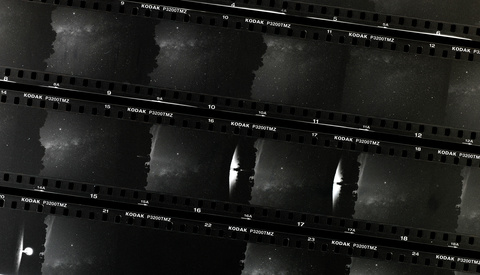
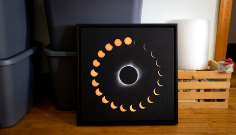

Helpful Natural Light Home Studio Tips and Tricks

Most people start out their photography journey learning how to light their photos using natural light, and many photographers continue to use it for work at home, both because of its look and because it saves on space that might be tight wherever you live. If you enjoy working with natural light in your home studio, be sure to check out this great video with lots of helpful tips and tricks.
HHow to Get the Most out of a Wide Angle Lens for Landscape Photography
The wide angle is undoubtedly the lens of choice for the majority of landscape photography, but it comes with its own challenges and pitfalls. If you have trouble using wide angle lenses, check out this great video full of a ton of helpful tips to improve your images.

How to Get the Most out of a Wide Angle Lens for Landscape Photography
The wide angle is undoubtedly the lens of choice for the majority of landscape photography, but it comes with its own challenges and pitfalls. If you have trouble using wide angle lenses, check out this great video full of a ton of helpful tips to improve your images.
Photograph the Milky Way on Digital and Film With Gear You Already Have
Getting untracked photos of the Milky Way is significantly easier than you may think for both digital and film. The approach for film is much different than digital but still attainable with the right approach.

Helpful Natural Light Home Studio Tips and Tricks

Most people start out their photography journey learning how to light their photos using natural light, and many photographers continue to use it for work at home, both because of its look and because it saves on space that might be tight wherever you live. If you enjoy working with natural light in your home studio, be sure to check out this great video with lots of helpful tips and tricks.